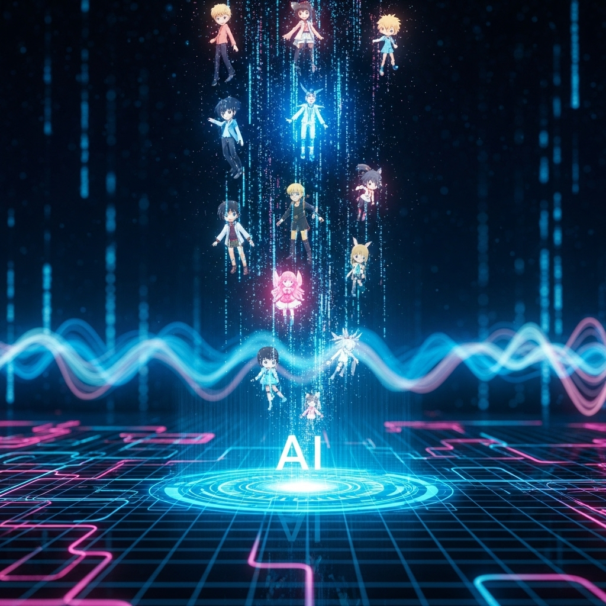
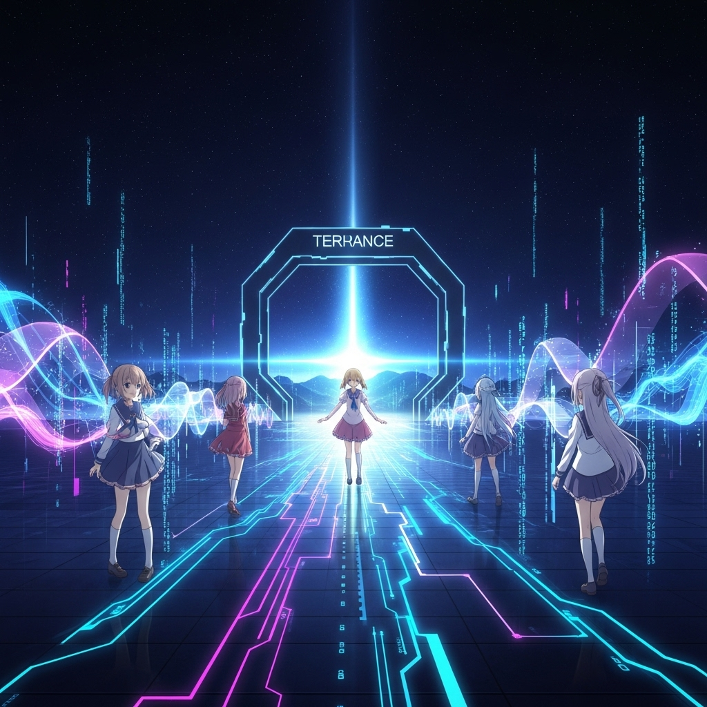
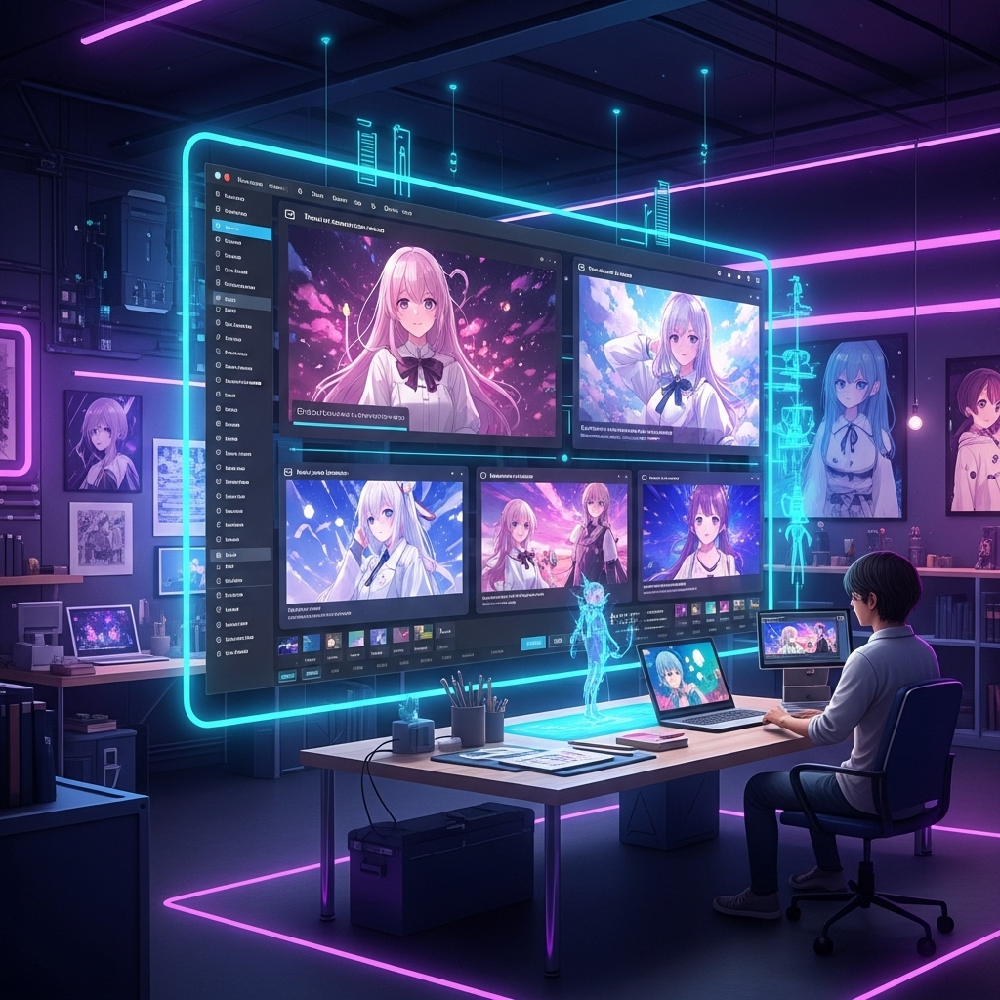
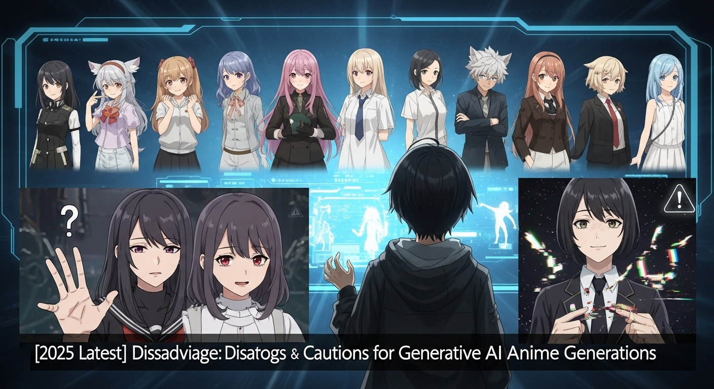
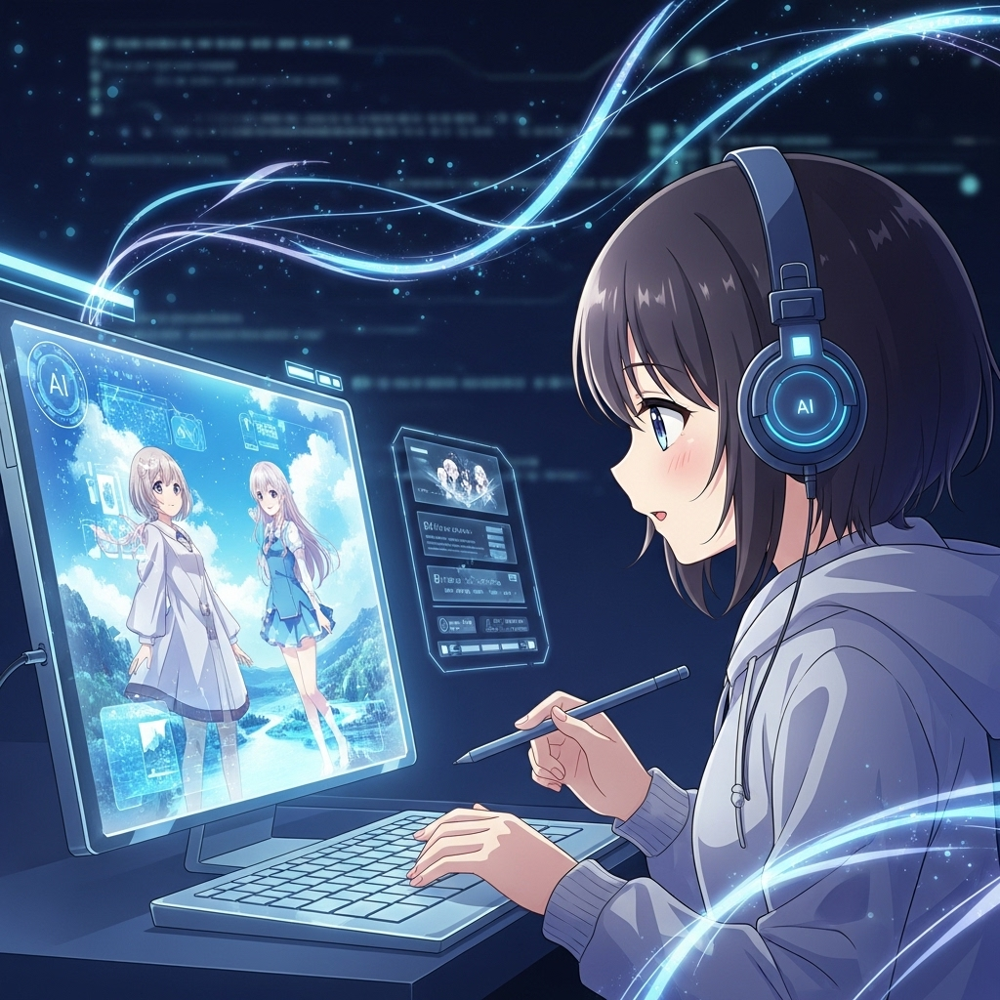
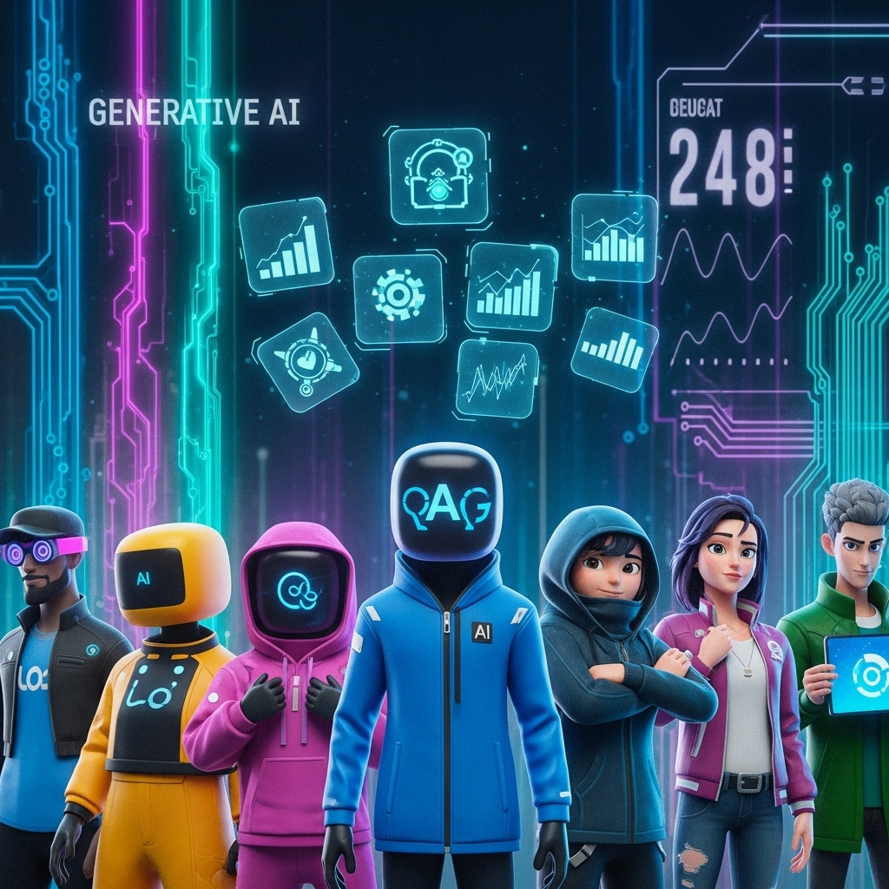

【2025年最新】生成AIでアニメ画像を生成！おすすめツールと活用術

導入

近年、人工知能（AI）の進化は目覚ましく、私たちの想像力を具体的な形にする新しい扉を次々と開いています。その中でも特に注目を集めているのが、「生成AI」と呼ばれる技術です。テキストから画像を生成したり、既存の画像を加工したりと、その応用範囲は多岐にわたりますが、アニメーションや漫画の世界においても、この生成AIはまさに革命的な変化をもたらしつつあります。
かつて、一枚のアニメ画像を制作するには、熟練した技術と膨大な時間、そして多くの労力が必要でした。キャラクターデザイン、背景の描き込み、色彩設計、そしてそれら全てを統合する構成力。これらは長年の経験と研鑽によって培われるものであり、誰もが気軽に手を出せる領域ではありませんでした。しかし、生成AIの登場により、その状況は一変しました。今や、簡単なテキストの指示（プロンプト）を入力するだけで、まるでプロの絵師が描いたかのような美しいアニメ画像を、誰もが気軽に、そして瞬時に生み出すことができるようになったのです。
この技術は、クリエイターにとって新たな表現の可能性を広げるだけでなく、趣味でアニメキャラクターを描きたい方、SNSで目を引くビジュアルを作成したい方、あるいはビジネスでユニークなコンテンツを必要とする方々にとっても、強力な味方となるでしょう。アイデアを形にするまでのハードルが劇的に下がり、より多くの人々がクリエイティブな活動に没頭できる時代が到来したと言っても過言ではありません。
しかし、生成AIを活用する上で、そのメリットだけでなく、潜在的なデメリットや注意点、そして多種多様なツールの中から自分に合ったものを選ぶための知識も不可欠です。本記事では、2025年現在の最新情報を踏まえ、生成AIでアニメ画像を生成する際のメリットとデメリット、ツールの選び方、そして厳選されたおすすめツールを詳しくご紹介します。生成AIがもたらす素晴らしい可能性を最大限に引き出し、あなたの創造性を解き放つための一助となれば幸いです。さあ、一緒に生成AIが織りなすアニメ画像の世界を深く探求していきましょう。
生成AIでアニメ画像を生成するメリット

生成AIによるアニメ画像生成は、クリエイティブなプロセスに革新をもたらし、多くのメリットを提供します。時間、表現、アイデアという三つの側面から、その恩恵を詳しく見ていきましょう。
メリット１．制作時間の大幅短縮と効率化
アニメーションやイラストの制作は、非常に時間と労力がかかる作業です。特に、プロの現場では、企画、デザイン、作画、彩色、背景、仕上げといった多岐にわたる工程があり、それぞれに専門のスキルを持つ人材が配置されます。一枚のキャラクターイラストを描き上げるだけでも、コンセプト立案からラフスケッチ、線画、下塗り、陰影付け、ハイライト、背景の描き込み、そして最終的な調整に至るまで、数時間から数日、あるいはそれ以上の時間を要することも珍しくありません。特に、キャラクターのポーズや表情、衣装、背景のディテールなど、細部にわたるこだわりが強いほど、その時間は膨大になります。
しかし、生成AIの登場により、この状況は劇的に変化しました。生成AIは、ユーザーが入力したテキスト（プロンプト）に基づいて、数秒から数分という驚異的な速さで、高品質なアニメ画像を生成する能力を持っています。例えば、「桜の木の下で微笑む女子高生、制服、風になびく髪、アニメスタイル、夕焼け」といった指示を与えるだけで、AIは瞬時にその情景を描き出してくれます。これにより、手作業でゼロから描く場合の何百倍、何千倍ものスピードで、視覚的なイメージを具現化することが可能になりました。
この「時間の大幅短縮」は、個人のクリエイターだけでなく、アニメ制作スタジオやゲーム開発会社にとっても計り知れないメリットをもたらします。例えば、初期のコンセプトアート作成段階で、複数のアイデアを素早くビジュアル化し、比較検討する作業が格段に効率化されます。キャラクターデザインのバリエーションを短時間で大量に生成し、その中から最適なものを選び出すことも容易になります。また、背景イラストや小道具のデザインにおいても、AIが初期案を生成することで、アーティストはより創造的な作業や最終的な調整に集中できるようになります。
さらに、AIは疲れることなく、24時間365日稼働し続けることができます。これにより、制作のボトルネックとなりがちだった「作画待ち」の時間を大幅に削減し、プロジェクト全体の進行速度を向上させることが可能です。特に納期が迫っているプロジェクトや、大量のビジュアルコンテンツが必要な場面において、生成AIはまさに「時間」という最も貴重なリソースを節約する強力なツールとなるでしょう。クリエイティブな作業における反復的な工程や、初期の試行錯誤にかかる時間を最小限に抑え、より本質的な創造活動に集中できる環境を整えることができるのです。
メリット２．表現の幅が広がり、新たな世界観を創出
クリエイターにとって、常に新しい表現を追求し、独自の視点や世界観を具現化することは究極の目標の一つです。しかし、既存の技術や自身のスキルセットの限界に直面し、頭の中にある壮大なイメージを完全に形にできないという壁にぶつかることも少なくありません。特にアニメーションやイラストレーションの世界では、特定の画風や技術の習得に長い時間が必要であり、多様な表現を自在に操ることは至難の業とされてきました。
生成AIは、この「表現の限界」を大きく押し広げる可能性を秘めています。AIは、インターネット上の膨大な画像データを学習しており、その中には多種多様な画風、色彩、構図、キャラクターデザイン、背景設定などが含まれています。この学習データに基づいて、AIはユーザーの指示に応じて、無限とも言えるバリエーションのアニメ画像を生成することができます。
例えば、あなたは「サイバーパンクな未来都市の路地裏で、日本の伝統的な着物を着た少女がたたずむ」という、一見すると相反する要素を組み合わせた情景を思い描いたとします。これを手描きで表現しようとすると、サイバーパンクの世界観と着物のディテール、そして両者が違和感なく融合するような画風を熟知している必要があります。しかし、生成AIであれば、適切なプロンプトを与えるだけで、これらの要素が見事に融合した、オリジナリティ溢れる画像を瞬時に生成することが可能です。AIは、単に要素を組み合わせるだけでなく、それらの要素が持つ雰囲気やスタイルを学習し、自然な形で統合する能力を持っているため、クリエイターの想像力をはるかに超えるような、斬新で魅力的なビジュアルを生み出すことができます。
また、AIは既存の画風を模倣するだけでなく、それらを組み合わせたり、新たな解釈を加えたりすることで、これまでに見たことのないようなユニークなスタイルを創出することも可能です。例えば、「スタジオジブリ風のタッチで描かれた宇宙船の内部」や、「浮世絵のスタイルで描かれた現代の渋谷の交差点」といった、異なる文化や時代、ジャンルの要素を融合させることで、まさに「新たな世界観」を創造することができます。これにより、クリエイターは自身の得意な画風に縛られることなく、より自由で大胆な発想に基づいた作品を制作できるようになります。
さらに、AIは色彩感覚や構図、光の表現においても、人間の想像力を刺激するような提案をしてくれます。自分では思いつかなかったような配色やアングル、あるいは光と影のドラマチックな使い方を発見し、それを自身の作品に取り入れることで、表現の幅をさらに広げることが可能です。このように、生成AIは単なる制作補助ツールにとどまらず、クリエイターの創造性を刺激し、新たな表現の地平を開拓するための強力なパートナーとなり得るのです。
メリット３．アイデア出しやラフ案作成の効率化
クリエイティブな活動において、最も重要な初期段階の一つが「アイデア出し」と「ラフ案作成」です。企画の根幹をなすコンセプトを固め、それを視覚的な形で具現化する最初のステップであり、この段階でいかに多くの選択肢を探り、最適な方向性を見つけ出すかが、最終的な成果物の質を大きく左右します。しかし、このプロセスは時に、時間と精神的なエネルギーを大量に消費するものです。
手作業でのアイデア出しやラフ案作成は、限られた時間の中で多くのバリエーションを試すことが難しいという課題を抱えています。例えば、キャラクターデザイン一つとっても、様々な表情、ポーズ、衣装、髪型、色の組み合わせなどを一つ一つ描いていくのは骨の折れる作業です。背景デザインにおいても、異なる時間帯や天候、季節、あるいは建物の配置や光の当たり方を変えて試すことは、非常に手間がかかります。結果として、時間的な制約から、十分に多様なアイデアを検討することなく、最初のいくつかの案で決定を下してしまうことも少なくありません。
生成AIは、この初期段階のプロセスを劇的に効率化し、クリエイターがより多くの選択肢を検討し、より良いアイデアにたどり着くための強力な支援ツールとなります。プロンプトにキーワードを入力するだけで、AIは瞬時に数十、数百もの異なるラフ案やイメージを生成してくれます。例えば、「猫耳の魔法少女、ロリータファッション、杖、星空の背景、可愛い」といったプロンプトを入力すれば、AIは様々なポーズや表情、衣装のバリエーションを持つ魔法少女の画像を大量に生成してくれるでしょう。
この「大量生成」の能力は、クリエイターが自身の頭の中にある漠然としたイメージを具体化する上で非常に役立ちます。生成された画像を見ることで、「この髪型は良いが、衣装はもっとシンプルにしたい」「この背景の雰囲気は好きだが、キャラクターの表情は変えたい」といった具体的なフィードバックを自分自身に与えることができます。気に入った要素があれば、その画像を基にさらにプロンプトを調整し、より理想に近い画像を生成することも可能です。この試行錯誤のサイクルを高速で繰り返すことで、効率的にアイデアを洗練させ、最終的なデザインの方向性を固めることができます。
また、AIが生成する画像の中には、クリエイター自身では思いつかなかったような意外な組み合わせや、斬新な表現が含まれていることもあります。これらは、新たなインスピレーションの源となり、既存の枠にとらわれない独創的なアイデアを生み出すきっかけとなるでしょう。例えば、「未来的な剣士、和風の鎧、サイバーパンクな街並み」といったプロンプトから、予想外に美しい融合デザインが生まれたり、特定のキャラクターの魅力を引き出す新しいポーズや表情が見つかったりすることもあります。
このように、生成AIはアイデアの「量」と「質」の両面で、クリエイティブな初期段階を強力にサポートします。時間と労力を節約しながら、より多様で質の高いアイデアを効率的に生み出し、クリエイティブなプロセス全体の質を高めることができるのです。
生成AIでアニメ画像を生成するデメリット・注意点

生成AIはアニメ画像生成に革命をもたらす一方で、その利用にはいくつかのデメリットや注意点が存在します。特に、著作権、品質のばらつき、そして無料ツールの制限といった側面は、利用者が十分に理解し、適切に対処すべき重要な課題です。
デメリット１．著作権や倫理的な問題への配慮
生成AIの技術が急速に発展する中で、最も議論が活発に行われているのが、著作権と倫理的な問題です。これは、生成AIがインターネット上にある膨大な量の既存の画像データ（イラスト、写真、絵画など）を学習し、そのパターンや特徴を模倣して新たな画像を生成するという仕組みに起因します。
著作権の問題:
- 学習データの著作権: AIが学習するデータの中に、著作権で保護された作品が多数含まれている場合、その学習行為自体が著作権侵害にあたるのではないかという議論があります。特に、著作権者の許諾なく無断で利用されたデータでAIが学習した場合、法的な問題が生じる可能性があります。各国や地域によって著作権法の解釈が異なるため、この問題は複雑さを増しています。
- 生成物の著作権: AIが生成した画像に著作権は発生するのか、発生するとすれば誰に帰属するのかという問題も重要です。現在の多くの国の法制度では、著作権は「人間の創作物」に与えられるものであり、AIが単独で生成した作品には著作権が認められないとする見方が有力です。しかし、人間がプロンプトを入力し、AIを操作して生成した画像の場合、その「操作」や「指示」が創作性を持つとみなされ、ユーザーに著作権が認められる可能性もあります。ただし、既存の作品と酷似した画像が生成された場合、元の作品の著作権侵害となるリスクも否定できません。
- 商用利用の可否: 生成AIツールの多くは、商用利用に関する明確な規約を設けています。しかし、その規約が学習データの著作権問題とどのように関連しているのか、生成された画像の著作権が誰に帰属するのかといった点については、依然として不透明な部分が多いのが実情です。商用利用を検討する際は、各ツールの利用規約を熟読し、可能な限りリスクを回避するための対策（例：生成画像を大幅に加筆修正する、オリジナリティを追求する）を講じる必要があります。
倫理的な問題:
- クリエイターへの影響: AIによる画像生成が普及することで、人間のイラストレーターやデザイナーの仕事が奪われるのではないかという懸念があります。特に、安価で大量の画像を生成できるAIは、市場価値に影響を与える可能性があります。
- 創造性の喪失: AIが簡単に画像を生成できるようになったことで、人間が自らの手で創作する喜びや、苦労してスキルを習得する過程が失われるのではないかという議論もあります。また、AIに依存しすぎると、人間の創造性や発想力が低下する可能性も指摘されています。
- 不適切なコンテンツの生成: AIは学習データに基づいて画像を生成するため、意図せず差別的、暴力的、性的なコンテンツや、特定の人物を誹謗中傷するような画像を生成してしまうリスクがあります。特に、悪意のあるプロンプトによって、ディープフェイクなどの問題を引き起こす可能性も否定できません。
- 模倣とスタイル盗用: 特定のアーティストの画風やキャラクターを模倣するようにAIに指示することで、そのアーティストのスタイルを「盗用」するような行為が横行する可能性もあります。これは、アーティストの創作活動に対する敬意を欠く行為であり、倫理的に問題視されます。
これらの問題に対処するためには、生成AIを利用するユーザー一人ひとりが、技術の限界と責任を理解し、倫理的な意識を持って利用することが不可欠です。利用規約を遵守し、常に著作権と倫理に配慮したクリエイティブな活動を心がけることが求められます。また、AI開発者側も、学習データの透明性確保や、不適切なコンテンツ生成を防ぐための技術的・倫理的ガイドラインの整備を進める必要があります。
デメリット２．生成される品質のばらつき
生成AIは驚くべき画像を瞬時に生み出すことができますが、常に完璧な結果が得られるわけではありません。特に、アニメ画像を生成する際には、品質のばらつきが顕著に現れることがあります。これは、AIの学習モデルの特性、プロンプトの入力方法、そしてAIが「完璧なアニメ画像」をどのように認識しているかという点に起因します。
具体的な品質のばらつきの例:
- 身体の不自然さ:
- 手や指の描写: AIが生成するアニメ画像で最もよく見られる問題の一つが、手や指の不不自然さです。指が6本あったり、逆に少なかったり、関節の向きがおかしかったり、指の形が歪んでいたりすることが頻繁に発生します。これは、手や指が非常に複雑な構造を持ち、様々なポーズで多様な形状を取るため、AIが正確に学習しきれていないことに原因があります。
- 身体の比率や関節: キャラクターの腕や足の長さが不自然に伸び縮みしたり、関節の位置がおかしかったり、体全体が歪んで見えたりすることもあります。特に、複雑なポーズやアングルでは、このような問題が発生しやすくなります。
- 顔の表情や目の描写:
- 左右非対称: キャラクターの顔が左右非対称になったり、目の大きさが異なったり、視線が定まらなかったりすることがあります。アニメキャラクターの魅力は表情に大きく左右されるため、このような不自然さは致命的となる場合があります。
- 瞳のディテール不足: 瞳の中に光が入っていなかったり、焦点が合っていなかったり、感情が読み取れないような無機質な目になることもあります。
- 背景との整合性:
- 生成されたキャラクターと背景が、絵柄や光の当たり方、遠近感などで不自然に分離して見えることがあります。例えば、キャラクターは鮮明なのに背景はぼやけていたり、キャラクターには影があるのに背景には不自然に影がない、といったケースです。
- プロンプトで指定した要素が、意図しない形で背景に紛れ込んだり、逆に指定したはずの要素が欠落したりすることもあります。
- 細部の描写の曖昧さ:
- 衣装の模様やアクセサリー、小道具などの細部が、ぼやけていたり、意味不明な形状になっていたりすることがあります。特に、複雑なデザインのものは、AIが正確に再現するのが難しい傾向にあります。
- 画風の不安定さ:
- 同じプロンプトを複数回試しても、毎回異なる画風やタッチで生成されることがあります。これは、特定の画風を安定して出力したい場合にはデメリットとなります。
対処法:
- プロンプトの工夫: より具体的で詳細なプロンプトを入力することで、AIが意図を正確に理解しやすくなります。ネガティブプロンプト（生成してほしくない要素を指定する）を活用することも有効です。
- 複数回生成と選別: 一度の生成で完璧な画像が得られることは稀です。複数回生成を繰り返し、その中から最も品質の高いものを選ぶ「ガチャ」のような感覚で利用することが一般的です。
- 部分修正の活用: 生成された画像に多少の不自然さがあっても、それを基に画像編集ソフト（Photoshopなど）で手動で修正を加えることで、品質を向上させることが可能です。特に、手や指の修正は、多くのクリエイターが行っています。
- モデルの選択と調整: 生成AIツールによっては、多様なモデル（学習済みデータセット）が提供されています。それぞれのモデルが得意とする画風や品質が異なるため、目的に合ったモデルを選ぶことが重要です。また、設定項目（サンプリングステップ数、CFGスケールなど）を調整することで、生成画像の品質をコントロールできる場合もあります。
- インペイント・アウトペイント機能の活用: 特定のツールには、生成された画像の一部を再生成したり（インペイント）、画像を拡張したりする（アウトペイント）機能があります。これらを活用することで、不自然な部分を修正したり、構図を調整したりすることが可能です。
生成AIはまだ発展途上の技術であり、完璧ではありません。しかし、これらのデメリットを理解し、適切な対処法を講じることで、その強力な機能を最大限に活用し、高品質なアニメ画像を効率的に生み出すことが可能になります。
デメリット３．無料ツール利用時の機能制限
生成AIの魅力の一つは、その手軽さにあります。多くのツールが無料プランや試用期間を提供しており、気軽にその性能を体験できる点が、新規ユーザーを引きつける大きな要因となっています。しかし、無料ツールや無料プランには、当然ながら様々な機能制限が設けられており、本格的に生成AIを活用したい場合には、これが大きなデメリットとなり得ます。
無料ツールの主な機能制限:
- 生成回数の制限:
- 最も一般的な制限が、画像を生成できる回数の上限です。例えば、「1日に〇回まで」「月に〇回まで」といった形で制限が設けられています。特に、試行錯誤を繰り返して理想の画像を追求する際には、この回数制限が大きな足かせとなります。プロンプトを少し変えるだけでも1回とカウントされるため、あっという間に上限に達してしまうことも珍しくありません。
- 生成速度の低下:
- 無料ユーザーは、有料ユーザーと比較して画像の生成速度が遅く設定されていることがあります。サーバーのリソースが優先的に有料ユーザーに割り当てられるため、無料ユーザーは待ち時間が発生したり、生成に時間がかかったりすることがあります。
- 生成される画像の品質制限:
- 無料プランでは、生成される画像の解像度が低く設定されている場合があります。WebサイトやSNSでの利用には十分でも、印刷物や高精細なビジュアルコンテンツには適さないことがあります。
- また、より高品質なモデルや、特定の画風に特化したモデルが有料プラン限定で提供されていることもあります。無料プランでは、基本的なモデルしか利用できず、表現の幅が狭まる可能性があります。
- 高度な機能の利用制限:
- プロンプト入力の自由度: より複雑なプロンプト構造（例：重み付け、ネガティブプロンプトの詳細設定）や、画像から画像を生成する「Image-to-Image」、特定の構図を維持する「ControlNet」などの高度な機能は、有料プラン限定であることが多いです。これらの機能は、生成画像の品質やコントロール性を高める上で非常に重要です。
- モデルの選択肢: 多様な画風やスタイルに対応するための豊富なモデル（Checkpointモデル、LoRAモデルなど）が、有料プランでしか利用できない、あるいはアップロード・利用できるモデル数に制限がある場合があります。
- プライベート生成: 生成した画像が公開されてしまうのを防ぐ「プライベート生成」機能も、有料プランの特典であることが多いです。無料プランでは、生成した画像がコミュニティで公開され、他のユーザーに見られたり、再利用されたりする可能性があります。
- 商用利用の制限: 無料プランで生成した画像は、個人的な利用に限定され、商用利用が禁止されているケースが非常に多いです。ビジネスや収益化を目的とする場合は、有料プランへの加入が必須となるでしょう。
- 広告の表示:
- 無料ツールでは、利用中に広告が表示されることがあります。これは、ツールの運営費用を賄うための一般的な方法ですが、作業の集中を妨げる要因となることがあります。
- サポート体制の制限:
- 問題が発生した際のカスタマーサポートが、有料ユーザーに比べて優先度が低かったり、利用できるサポートチャネルが限定されたりすることがあります。
これらの機能制限は、生成AIを単なる「お試し」として利用する分には問題ありませんが、本格的に創作活動に取り入れたい、あるいはビジネスで活用したいと考えるのであれば、有料プランへの移行を検討する必要があることを示唆しています。無料ツールで基本的な操作感を掴み、その可能性を感じ取った上で、自身のニーズに合った有料プランを選ぶことが、生成AIを最大限に活用するための賢明な選択と言えるでしょう。
アニメ風生成AI画像ツールの選び方

生成AIでアニメ画像を生成するツールは数多く存在し、それぞれに特徴があります。自分に最適なツールを選ぶことは、効率的かつ満足のいく創作活動を行う上で非常に重要です。ここでは、ツール選びの際に注目すべき5つのポイントを詳しく解説します。
選び方１．生成できる画像のクオリティと画風
生成AIツールを選ぶ上で、最も直感的かつ重要な判断基準となるのが、「生成される画像のクオリティと画風」です。最終的にどのようなアニメ画像を求めているのかによって、選ぶべきツールは大きく変わってきます。
クオリティ（画質・精細さ）:
- 解像度: 生成される画像の解像度は、その用途によって重要度が異なります。WebサイトやSNSでの利用であれば、比較的低めの解像度でも問題ありませんが、印刷物や高精細な動画素材として活用する場合には、より高解像度で出力できるツールを選ぶ必要があります。多くのツールは、有料プランで高解像度オプションを提供しています。
- ディテールと破綻の少なさ: 画像のディテールがどれだけ細かく描写されているか、そして不自然な破綻（例：指が不自然、顔が歪んでいる、背景が意味不明）がどれだけ少ないかは、そのツールの生成能力の高さを示します。特に、キャラクターの表情や衣装の細部、背景の遠景などが美しく描写されているかを確認することが重要です。一般的に、より高度なAIモデルや、特定の用途に特化したモデルを持つツールほど、高クオリティな画像を生成しやすい傾向にあります。
- 光と影の表現: 光の当たり方や影のつき方、色彩のグラデーションが自然で、絵全体に深みと立体感を与えているかどうかも、クオリティを測る重要な要素です。アニメ調のイラストでは、光源の表現がキャラクターの魅力を引き出す上で不可欠です。
画風（アートスタイル）:
生成AIツールは、それぞれが学習しているデータセットの特性によって、得意とする画風やスタイルが異なります。大きく分けて以下のような傾向があります。
- リアル系アニメ調:
- 写実的な要素とアニメ的なデフォルメが融合したスタイルです。目の表現がより詳細で、肌の質感や髪の毛の流れがリアルに描かれることが多いです。背景も写真に近い描写になる傾向があります。
- 例：「鬼滅の刃」や「Fate」シリーズのような、美麗で精緻な描写を求める場合に適しています。
- 萌え系・可愛い系アニメ調:
- 大きな瞳、デフォルメされた体型、パステルカラーなど、日本の「萌え」文化に特化したスタイルです。可愛らしさや親しみやすさを重視したキャラクターデザインが得意です。
- 例：ライトノベルの挿絵や、アイドル系のゲームイラストのような雰囲気を求める場合に適しています。NovelAIなどがこの分野に強いとされています。
- カートゥーン・デフォルメ系:
- よりシンプルな線や大胆な色彩、誇張された表現が特徴のスタイルです。子供向けアニメやギャグ漫画のような、動きや表情の面白さを重視した表現に適しています。
- 水彩画・油絵風アニメ調:
- 手描き感のあるテクスチャや筆致を再現し、温かみのある、あるいは芸術的な雰囲気を持つアニメ画像を生成できるツールもあります。
- 特定のスタジオ・アーティスト風:
- 特定の有名アニメスタジオ（例：スタジオジブリ風）や、人気イラストレーターの画風を模倣するような画像を生成できるツールも存在します。ただし、これらは著作権や倫理的な問題に注意が必要です。
選び方のポイント:
- 目的の明確化: どのようなアニメ画像を生成したいのか、具体的なイメージ（キャラクターの雰囲気、背景の情景、全体の色調など）を明確にすることが第一歩です。
- サンプル画像の確認: 各ツールの公式サイトやコミュニティで公開されているサンプル画像を徹底的に確認しましょう。特に、自分が生成したいと考えているイメージに近いサンプルがあるかどうかを探します。
- 無料プラン・試用期間の活用: 実際にツールを使ってみて、プロンプトを入力し、生成される画像のクオリティや画風が自分の期待に合致するかどうかを試すのが最も確実な方法です。
- コミュニティの評判: ユーザーコミュニティやレビューサイトで、特定のツールが得意とする画風や、生成される画像の品質に関する評判を調べるのも有効です。
生成AIツールは、それぞれが独自の「個性」を持っています。その個性が、あなたの求めるアニメ画像のスタイルと合致するかどうかを見極めることが、ツール選びの成功に繋がります。
選び方２．無料・有料プランと料金体系
生成AIツールを選ぶ際、生成画像のクオリティや画風と並んで、非常に現実的かつ重要な判断基準となるのが「料金体系」です。多くのツールは無料プランと有料プランを提供しており、それぞれに利用できる機能や生成回数、品質などに差があります。自分の利用目的や頻度、予算に合わせて最適なプランを選ぶことが肝要です。
無料プランのメリットとデメリット:
- メリット:
- 手軽に試せる: 費用をかけずにツールの基本的な機能や性能、得意な画風を体験できます。初めて生成AIに触れる方や、複数のツールを比較検討したい方にとって非常に便利です。
- 学習コストが低い: 導入のハードルが低く、気軽にプロンプトの練習やアイデア出しに利用できます。
- デメリット:
- 機能制限: ほとんどの無料プランでは、生成回数、生成速度、生成画像の解像度、利用できるモデルの種類、高度な機能（例：Image-to-Image、ControlNet、プライベート生成）などに制限があります。
- 商用利用不可: 多くの場合、無料プランで生成した画像の商用利用は禁止されています。
- 広告表示: ツールの運営費用を賄うため、広告が表示されることがあります。
有料プランの種類と料金体系:
有料プランは、一般的に以下のいずれかの形式で提供されます。
- 月額/年額サブスクリプション制:
- 毎月または毎年定額を支払うことで、一定の生成回数や機能を利用できる最も一般的な形式です。
- 特徴: 継続的に利用するユーザーにとって、最もコストパフォーマンスが良い場合があります。多くの場合、複数のプランが用意されており、生成回数や利用できる機能のレベルに応じて料金が異なります。
- 例: Midjourney、NovelAI、DALL-E3（ChatGPT Plus経由）など。
- クレジット/トークン購入制:
- 特定の単位（クレジットやトークン）を購入し、画像を生成するたびに消費する形式です。生成回数が多いほど、消費するクレジットも増えます。
- 特徴: 利用頻度が不定期なユーザーや、特定のプロジェクトで一時的に大量に画像を生成したい場合に適しています。使い切りのため、無駄なく利用できるメリットがあります。
- 例: Stable Diffusion系のサービスの一部、PixAI.artなど。無料配布されるクレジットで試用できるケースも多いです。
- 従量課金制:
- 画像を生成した回数や、利用したサーバーのリソース量に応じて料金が変動する形式です。
- 特徴: 大規模なプロジェクトや、非常に大量の画像を生成する必要がある場合に、柔軟に対応できる場合があります。しかし、予算管理が難しくなる可能性もあります。
- 例: 自分でStable Diffusionを構築し、クラウドサービス（Google Colab Proなど）のGPUを利用する場合など。
料金体系を比較する際のポイント:
- 生成回数とコスト: 月間または年間でどれくらいの画像を生成したいのかを具体的に見積もり、各プランの生成回数上限と料金を比較します。1枚あたりの単価を計算してみるのも良いでしょう。
- 利用したい機能の有無: 高解像度出力、Image-to-Image、ControlNet、プライベート生成、特定の高品質モデルの利用など、自分が使いたい機能がどのプランに含まれているかを確認します。
- 商用利用の可否と条件: ビジネスでの利用を考えている場合は、商用利用が許可されているか、その際の条件（例：生成物の著作権帰属、クレジット表記の有無）を必ず確認してください。
- 解約のしやすさ: 試用期間後に自動更新されるのか、いつでも解約できるのかなど、サブスクリプションの条件も確認しておくと安心です。
- 無料クレジットの有無: 一部のツールでは、新規登録時や特定の条件で無料クレジットが付与されることがあります。これを活用して、有料プランの機能を体験してみるのも良いでしょう。
ツール選びは、あなたの創作活動を支える重要な投資です。無料プランでじっくり試用し、自分のニーズと予算に最も合致する有料プランを見つけることが、長期的に生成AIを有効活用するための鍵となります。
選び方３．プロンプト入力の自由度と日本語対応
生成AIで画像を生成する際の「呪文」とも称されるプロンプトは、まさにAIとの対話の鍵を握る要素です。そのため、ツール選びにおいて「プロンプト入力の自由度」と「日本語対応」は、非常に重要なポイントとなります。
プロンプト入力の自由度:
プロンプト入力の自由度が高いツールは、ユーザーがより細かく、より正確に自分の意図をAIに伝えることを可能にします。これにより、思い通りの画像を生成できる可能性が高まります。
- 詳細なテキスト入力の許容範囲:
- 単語だけでなく、文章全体で情景やキャラクターの心情、光の状況などを詳細に記述できるか。
- プロンプトの文字数制限があるか、あるいは非常に長いプロンプトでも適切に解釈されるか。
- 重み付け（強調・弱化）機能:
- 特定のキーワードやフレーズを強調したり（例：`((beautiful girl))`）、弱めたり（例：`[ugly]`）する機能があるか。これにより、AIがどの要素を優先的に反映させるかをコントロールできます。
- ネガティブプロンプトの充実度:
- 生成してほしくない要素（例：`bad anatomy, deformed, ugly, extra limbs, low quality`など）を詳細に指定できるか。高品質な画像を生成するためには、ネガティブプロンプトの活用が不可欠です。
- プロンプトの階層構造や論理演算:
- 複数のプロンプトを組み合わせる際に、AND/ORなどの論理演算子を使用できるか。
- あるいは、特定の要素をグループ化して、より複雑な指示を与えられるか。
- 画像プロンプト（Image-to-Image）機能:
- テキストプロンプトだけでなく、参考となる画像（手描きのラフスケッチ、写真など）を入力し、それを基に画像を生成する機能があるか。これにより、構図や色合い、キャラクターのポーズなどをより正確にAIに伝えられます。
- ControlNetなどの高度な制御機能:
- ポーズや構図、線画などを外部の画像で指定し、その情報を維持したまま画像を生成できる「ControlNet」のような機能は、プロンプトだけでは難しい細かなコントロールを可能にします。
これらの機能が充実しているほど、生成AIは単なる「ガチャ」ではなく、クリエイターの意図を反映した「共同作業者」としての側面を強めます。
日本語対応:
多くの生成AIツールは、英語でのプロンプト入力が基本となっています。しかし、英語が苦手な方にとっては、これが大きなハードルとなることがあります。
- 日本語プロンプトの直接入力可否:
- ツールが日本語プロンプトを直接受け付け、適切に解釈して画像を生成できるかどうか。DALL-E3やBing Image Creatorのように、日本語に強く対応しているツールもあります。
- 日本語プロンプトの解釈精度:
- 日本語での入力が可能であっても、その解釈精度はツールによって差があります。意図した通りの画像を生成するためには、何度か試してそのツールの「日本語の癖」を掴む必要があります。
- 場合によっては、日本語を英語に翻訳してから入力する方が、より正確な結果が得られることもあります。
- UI（ユーザーインターフェース）の日本語対応:
- プロンプト入力だけでなく、ツールのメニューや設定項目、ヘルプなどが日本語に対応しているかどうかも重要です。UIが日本語であれば、操作に迷うことなくスムーズに利用できます。
- コミュニティやサポートの日本語対応:
- 問題が発生した際に、日本語で質問できるコミュニティやサポート体制があるかどうかも、安心して利用できるかどうかの判断基準となります。
選び方のポイント:
- 英語の習熟度: 英語でのプロンプト入力に抵抗がない場合は、プロンプトの自由度が最も高いツール（例：Midjourney、Stable Diffusion）を選ぶことで、表現の幅が広がります。
- 日本語での手軽さ重視: 英語での入力に不慣れな場合や、手軽に日本語で画像生成を試したい場合は、日本語対応が充実しているツール（例：DALL-E3、Bing Image Creator、NovelAIの一部モデル）を選ぶと良いでしょう。
- 翻訳ツールの活用: 英語ベースのツールを利用する場合でも、DeepLやGoogle翻訳などの翻訳ツールを併用することで、ある程度の日本語プロンプトを英語に変換して利用することが可能です。ただし、翻訳の精度によっては、意図が正確に伝わらない場合もあります。
プロンプトは、生成AIとのコミュニケーションの中心です。自分の言語能力や、どれだけ細かく画像をコントロールしたいかというニーズに合わせて、最適なプロンプト入力の自由度と日本語対応を持つツールを選ぶことが、満足度の高い生成AI体験に繋がります。
選び方４．商用利用の可否と利用規約
生成AIで生成したアニメ画像を、個人的な趣味の範囲を超えて、ブログ、SNS、YouTube、商品デザイン、広告など、ビジネスや収益化を目的とした活動で利用したいと考える場合、「商用利用の可否」と「利用規約」の確認は、最も重要なステップの一つです。これを怠ると、著作権侵害や契約違反といった法的な問題に発展するリスクがあります。
なぜ商用利用の可否が重要なのか？
生成AIが学習するデータには、著作権で保護された画像が多数含まれています。また、AIが生成した画像の著作権が誰に帰属するのか、という法的な解釈も、まだ完全に定まっていないのが現状です。そのため、多くの生成AIツールは、自社を守るため、またユーザーにリスクを周知するために、厳格な利用規約を設けています。
確認すべき主なポイント:
- 商用利用は「許可されているか」？
- まず、大前提として、利用を検討しているツールが商用利用を許可しているかどうかを確認します。無料プランでは商用利用が禁止されていることがほとんどで、有料プランであっても特定の条件が付随している場合があります。
- 著作権の帰属は誰か？
- 生成された画像の著作権が、ツール開発元、ユーザー、またはその両方に帰属するのかを確認します。
- ユーザーに帰属: 最も望ましいケースで、生成した画像をユーザーが自由に利用・販売できます。ただし、元の学習データに問題があった場合のリスクは残ります。
- ツール開発元に帰属: ユーザーは生成画像を「利用する権利」を持つだけで、著作権は開発元が保有します。利用範囲に制限がある場合があります。
- 共有（Creative Commonsなど）: コミュニティで生成された画像が共有され、特定のライセンス（例：CC BY-SA）の下で自由に利用できる場合があります。
- 多くのツールでは、有料プラン加入者に対して、生成物の著作権をユーザーに帰属させる（あるいはユーザーが商業的に利用することを許可する）方針を取っています。
- 生成された画像の著作権が、ツール開発元、ユーザー、またはその両方に帰属するのかを確認します。
- 具体的な利用範囲の制限:
- 商用利用が許可されていても、その範囲に制限がある場合があります。
- 例：「年間売上が〇ドル以下の場合のみ商用利用可」
- 例：「特定の業界（例：アダルト、政治）での利用は不可」
- 例：「生成した画像をそのまま販売することは不可だが、加工して商品化することは可」
- 例：「生成した画像を商標登録することは不可」
- 特に、AIが生成した画像をそのまま販売するような行為は、多くのツールで制限されているか、推奨されていません。加工や加筆修正を加えて、独自の創作性を加えることが求められるケースが多いです。
- 商用利用が許可されていても、その範囲に制限がある場合があります。
- クレジット表記の必要性:
- 商用利用する際に、ツール名や開発元のクレジット表記が義務付けられている場合があります。
- プライバシーと公開設定:
- 生成した画像が自動的に公開される設定になっている場合、商用利用を考えているアイデアやデザインが、意図せず他者に利用されてしまうリスクがあります。有料プランでは、プライベート生成機能が提供されていることが多いので、これを活用することが重要です。
- 規約の変更可能性:
- 生成AIの法整備や業界の動向は非常に流動的であり、ツールの利用規約も将来的に変更される可能性があります。定期的に最新の規約を確認する習慣をつけましょう。
- 免責事項:
- ツール側が、生成された画像の著作権侵害やその他の法的問題について、一切の責任を負わないとする免責事項が記載されていることがほとんどです。最終的な責任はユーザー自身が負うことになります。
確認方法と注意点:
- 公式サイトの確認: 各ツールの公式サイトにある「Terms of Service（利用規約）」「Commercial Use（商用利用）」「FAQ（よくある質問）」のページを必ず熟読してください。
- 言語の壁: 規約が英語で書かれている場合は、翻訳ツールなどを活用して、内容を正確に理解する努力が必要です。不明な点があれば、ツールのサポートに問い合わせることも検討しましょう。
- 自己責任の原則: 生成AIの利用は、最終的にユーザーの自己責任において行われます。特に商用利用を考えている場合は、慎重な姿勢で臨み、法的なリスクを最小限に抑えるための対策を講じることが不可欠です。
商用利用を視野に入れているのであれば、安易に無料ツールに飛びつかず、費用がかかっても、商用利用が明確に許可されており、その規約が自身のビジネスモデルと合致する有料ツールを選ぶべきです。安心して創作活動やビジネスを展開するためにも、利用規約の確認は決して怠らないようにしましょう。
選び方５．スマホ対応と使いやすさ
生成AIツールを選ぶ際、生成される画像のクオリティや料金体系もさることながら、「どれだけ手軽に、どこからでも利用できるか」という「使いやすさ」も非常に重要な要素となります。特に、現代のライフスタイルにおいて、スマートフォンやタブレットでの利用は欠かせません。
スマホ対応の重要性:
- 場所を選ばない創作活動: スマホ対応していれば、外出先や移動中、ちょっとした空き時間など、場所を選ばずにアイデアを試したり、画像を生成したりすることができます。PCの前に座る必要がないため、より柔軟で自由な創作活動が可能になります。
- 直感的な操作: スマートフォンはタッチ操作が基本であり、直感的なUI（ユーザーインターフェース）が求められます。複雑な設定やプロンプト入力も、スマホアプリやモバイル向けWebサイトでスムーズに行えるかどうかが、使いやすさの鍵となります。
- SNSとの連携: スマホで生成した画像をそのままSNSに投稿したり、メッセージアプリで共有したりする際の利便性が高まります。
確認すべきポイント:
- 専用アプリの有無と機能性:
- 多くの生成AIツールは、PCのWebブラウザからの利用が基本ですが、中にはiOS/Android向けの専用アプリを提供しているものもあります。
- 専用アプリは、スマホの画面サイズに合わせてUIが最適化されており、より快適な操作が可能です。通知機能やオフラインでのプロンプト作成など、アプリならではの機能が提供されることもあります。
- アプリ版とWeb版で機能差がないか、あるいはアプリ版でしか利用できない独自機能があるかどうかも確認しましょう。
- モバイル向けWebサイトの最適化:
- 専用アプリがない場合でも、ツールのWebサイトがスマートフォンやタブレットのブラウザで快適に動作するかどうかを確認します。
- レスポンシブデザインに対応しており、画面が小さくなってもレイアウトが崩れず、ボタンや入力フォームが押しやすいか。
- PC版と遜色ない機能が利用できるか（ただし、PC版よりも処理速度が遅くなる可能性はあります）。
- UI（ユーザーインターフェース）の直感性:
- プロンプト入力欄が分かりやすいか。
- 生成履歴が見やすいか、管理しやすいか。
- 設定項目がシンプルにまとめられており、初心者でも迷わずに操作できるか。
- 生成オプション（例：画風の選択、解像度調整）が直感的に操作できるか。
- 日本語に対応しているか（「選び方３」で詳述した通り）。
- プロンプト入力のしやすさ:
- スマホのソフトウェアキーボードでの入力がスムーズに行えるか。
- 音声入力に対応しているか（特に日本語対応の場合）。
- 過去のプロンプトを再利用しやすい機能（履歴、お気に入り登録など）があるか。
- 画像管理・共有機能:
- 生成した画像をスマホのギャラリーに簡単に保存できるか。
- SNS（X、Instagramなど）やメッセージアプリへの共有がスムーズに行えるか。
- 複数の画像をまとめてダウンロードできるか。
選び方のヒント:
- まず試してみる: 実際に自分のスマートフォンでツールのWebサイトにアクセスしたり、アプリをダウンロードして使ってみるのが一番確実です。数分間触ってみるだけで、そのツールの使いやすさがある程度判断できます。
- レビューや評判を参考にする: アプリストアのレビューや、SNSでのユーザーの評価を参考に、スマホでの使い勝手に関する情報を集めるのも有効です。
- 自分の利用スタイルに合わせる: ほとんどPCで作業する方はスマホ対応の優先度は低くても良いですが、移動中やちょっとした空き時間にアイデアを形にしたい方は、スマホ対応の充実度を重視すべきです。
スマホ対応と使いやすさは、生成AIを日常的に、そしてストレスなく活用するための基盤となります。特に「気軽に」「いつでもどこでも」創作活動を楽しみたいと考える方にとっては、非常に重要な選択基準となるでしょう。
【厳選】アニメ生成AI画像のおすすめツール7選を比較！

ここからは、数ある生成AI画像ツールの中から、特にアニメ画像の生成に強みを持つおすすめの7つのツールを厳選してご紹介します。それぞれのツールの特徴、得意なこと、利用方法、料金体系などを詳しく比較し、あなたが最適なツールを見つける手助けをさせていただきます。
Midjourney（ミッドジャーニー）：ハイクオリティなアニメ画像を生成
Midjourneyは、生成AI画像ツールの世界において、その圧倒的な画像クオリティと独特の美的センスで一線を画す存在です。特に、アニメ画像を生成する能力においても非常に高く評価されており、まるでプロのアーティストが描いたかのような、息をのむほど美しいビジュアルを生み出すことができます。
ツールの概要と特徴:
Midjourneyは、その名の通り「旅の途中」を意味するように、常に進化し続けるAIモデルを特徴としています。現在は主にDiscordというコミュニケーションツール上で動作し、専用のサーバーに参加してプロンプトを入力することで画像を生成します。他のツールに比べて、より芸術的で幻想的な画風を得意とし、光の表現や色彩の豊かさ、細部のディテールにおいて、非常に高いレベルを誇ります。
得意な画風やスタイル:
Midjourneyは、特定の画風に縛られることなく、幅広いアニメスタイルに対応できますが、特に以下のような表現でその真価を発揮します。
- 美麗で幻想的な世界観: 繊細な光の表現、深みのある色彩、そして細部までこだわり抜かれた背景描写は、見る者を物語の世界へと引き込みます。ファンタジー、SF、スチームパンクなど、壮大な世界観を描くのに非常に優れています。
- 映画的な構図と演出: 被写体へのフォーカス、奥行きのある構図、ドラマチックな光の当たり方など、まるで映画のワンシーンを切り取ったかのような、演出力の高い画像を生成します。
- キャラクターの魅力的な表現: キャラクターの表情や髪の毛の質感、衣装のディテールなど、細部にわたる描写が非常に美しく、キャラクターの個性を際立たせます。リアル寄りのアニメ調から、よりデフォルメされたスタイルまで、プロンプト次第で調整が可能です。
- 特定のアーティスト風のタッチ: プロンプトに特定のアーティスト名や画風を示すキーワードを加えることで、そのアーティストのタッチを模倣したような画像を生成することも可能です。ただし、著作権や倫理的な配慮は必要です。
具体的な使い方（プロンプト例、設定項目など）:
MidjourneyはDiscordのコマンド形式でプロンプトを入力します。基本的なコマンドは`/imagine`で、その後にプロンプトを記述します。
- 基本的なプロンプト例:
`/imagine prompt: a beautiful anime girl, long flowing hair, cherry blossoms, sunset, studio ghibli style, detailed, cinematic lighting --ar 16:9`
（美しいアニメの少女、長いなびく髪、桜、夕焼け、スタジオジブリ風、詳細、映画のようなライティング --アスペクト比16:9） - 主要なパラメータ:
- `--ar (アスペクト比)`: 画像の縦横比を指定します（例：`--ar 16:9`、`--ar 3:2`）。
- `--v (モデルバージョン)`: 使用するAIモデルのバージョンを指定します（例：`--v 6`）。最新バージョンはよりリアルで詳細な画像を生成する傾向があります。
- `--style (スタイル)`: 画像のスタイルを調整します（例：`--style raw`）。
- `--s (スタイル化の強度)`: AIがプロンプトをどれだけ自由に解釈するか（芸術性を高めるか）を調整します。
- `--niji (ニジジャーニー)`: アニメ・漫画に特化したモデル「Niji Journey」を利用するためのパラメータです。よりアニメらしい描写を求める場合に非常に有効です。
- ネガティブプロンプト: Midjourneyでは、プロンプトの最後に`--no (生成してほしくない要素)`を追加することで、ネガティブプロンプトを指定できます（例：`--no ugly, deformed, extra limbs`）。
利用料金体系（無料プランの有無、有料プランの内容）:
Midjourneyには無料試用期間がありますが、非常に制限が厳しく、数回の画像生成で上限に達します。本格的な利用には有料プランへの加入が必須です。
- Basic Plan: 月額10ドル程度。月に約200枚の画像を生成可能。商用利用可能。
- Standard Plan: 月額30ドル程度。無制限のRelaxモード（生成速度は遅い）、Fastモード（高速生成）が利用可能。商用利用可能。
- Pro Plan: 月額60ドル程度。Standard Planの機能に加え、ステルスモード（生成画像を非公開にできる）など、より高度な機能が利用可能。
商用利用の可否と規約:
有料プランに加入している限り、生成した画像の商用利用は基本的に許可されています。ただし、生成された画像の著作権は、有料プラン利用者の場合、ユーザーに帰属するとされています。しかし、利用規約は変更される可能性があるため、常に最新の情報を公式サイトで確認することが重要です。特に、生成した画像をそのまま販売するのではなく、加工や加筆修正を加えて独自の創作性を加えることが推奨されています。
どのようなユーザーにおすすめか:
- 最高のクオリティを求めるプロのクリエイターやアーティスト: 圧倒的な画像品質は、ゲーム開発、アニメ制作、出版物など、高品質なビジュアルを求める場面で大きな力を発揮します。
- 独自の美的センスや世界観を追求したい方: 芸術的な表現や幻想的なビジュアルを重視する方に最適です。
- アニメ・漫画に特化した高品質な画像を生成したい方: Niji Journeyモデルを活用することで、非常に魅力的なアニメ画像を効率的に生み出せます。
- 英語でのプロンプト入力に抵抗がない方: 英語でのプロンプト入力が基本となるため、英語に慣れている方がスムーズに利用できます。
Midjourneyは、その高い生成能力と美的センスで、あなたの想像力をはるかに超えるようなアニメ画像を具現化してくれるでしょう。ただし、その力を最大限に引き出すには、プロンプトの工夫やツールの特性を理解することが求められます。
StableDiffusion（ステイブル・ディフュージョン）：自由度高くアニメ画像を生成
Stable Diffusionは、オープンソースで公開されている生成AIモデルであり、その最大の魅力は「圧倒的な自由度とカスタマイズ性」にあります。自分でモデルを構築したり、様々な拡張機能（Extension）を追加したりすることで、ユーザーの求めるアニメ画像を、非常に細かくコントロールしながら生成できる点が、他のツールとは一線を画します。
ツールの概要と特徴:
Stable Diffusionは、Stability AI社が開発・公開した画像生成AIモデルです。オープンソースであるため、誰でも自由にプログラムをダウンロードし、自身のPC環境（高性能なGPUが必要）で実行したり、クラウドサービス上で利用したりすることができます。また、世界中のユーザーが作成・公開している「Checkpointモデル」や「LoRAモデル」といった追加学習モデルを組み込むことで、生成できる画像の画風や表現の幅を無限に広げられるのが特徴です。
得意な画風やスタイル:
Stable Diffusion自体は汎用的なモデルですが、追加モデルを導入することで、あらゆるアニメスタイルに対応できます。
- 多様なアニメスタイルへの対応: CheckpointモデルやLoRAモデルを用いることで、萌え系、美少女系、少年漫画風、リアル系アニメ調、カートゥーン調、水彩画風など、文字通り無限のアニメスタイルを生成できます。特定の人気アニメの画風を再現するモデルも多数存在します。
- 高いカスタマイズ性: プロンプトだけでなく、サンプリングメソッド、CFGスケール、ステップ数、シード値といった詳細なパラメータを調整することで、生成される画像の雰囲気やディテールを細かくコントロールできます。
- Image-to-Image（画像から画像）: 既存のイラストや写真を入力として、それをアニメ風に変換したり、構図や色合いを維持したまま新たな画像を生成したりする機能に優れています。
- ControlNetによる精密な制御: ControlNetという強力な拡張機能を使うことで、線画、ポーズ、深度マップ、顔の表情などを画像で指定し、その情報を忠実に反映した画像を生成できます。これにより、キャラクターのポーズや構図を意図通りに再現することが可能になります。
具体的な使い方（プロンプト例、設定項目など）:
Stable Diffusionは、Web UI（Automatic1111版など）を介して利用するのが一般的です。
- 基本的なプロンプト例:
`masterpiece, best quality, 1girl, solo, long hair, blue eyes, school uniform, cityscape background, anime style`
（最高品質、最高のクオリティ、1人の少女、一人、長い髪、青い瞳、制服、都市の背景、アニメスタイル） - ネガティブプロンプト例:
`low quality, worst quality, bad anatomy, deformed, ugly, extra limbs, blurry, grayscale`
（低品質、最悪の品質、不自然な身体、変形、醜い、余分な手足、ぼやけている、モノクロ） - 主要な設定項目:
- Checkpoint: ベースとなるAIモデルを選択します。アニメ系なら「Anything」「AbyssOrangeMix」などが有名です。
- LoRA: 特定のキャラクター、衣装、画風などを追加で学習させた軽量モデルで、Checkpointモデルと組み合わせて利用します。
- Sampling method: 画像生成のアルゴリズムを選択します（例：Euler a, DPM++ 2M Karras）。
- Sampling steps: 生成ステップ数を調整します。多いほど詳細になりますが、生成時間が長くなります。
- CFG scale: プロンプトへの忠実度を調整します。高いほどプロンプトに忠実ですが、不自然になることもあります。
- Seed: シード値（乱数の種）を指定することで、同じプロンプトでほぼ同じ画像を再生成できます。
- Image-to-Image: 参考画像とテキストプロンプトを組み合わせて画像を生成します。
- ControlNet: 線画、ポーズ、深度マップなどを基に画像を生成する際に使用します。
利用料金体系（無料プランの有無、有料プランの内容）:
Stable Diffusionはオープンソースであるため、モデル自体は無料です。しかし、利用方法によって費用が発生する場合があります。
- 自身のPCに導入: GPUを搭載した高性能PCが必要ですが、一度環境を構築すれば、基本的に無料で無制限に画像を生成できます。
- クラウドサービスを利用: Google Colab ProやRunPod、ReplicateなどのクラウドGPUサービスを利用する場合、利用時間やリソースに応じて料金が発生します。月額数百円〜数千円程度で利用できるプランが多いです。
- Webサービスを利用: SeaArt、PixAI.art、Hugging Face Spacesなど、Stable Diffusionを基盤としたWebサービスも多数存在します。これらは無料プラン（制限あり）と有料プラン（クレジット購入制やサブスクリプション制）が用意されています。
商用利用の可否と規約:
Stable Diffusionモデル自体は、Creative ML OpenRAIL-M Licenseの下で公開されており、商用利用も可能です。しかし、使用するCheckpointモデルやLoRAモデルによっては、個別に商用利用が禁止されている場合があるため、各モデルのライセンスを必ず確認する必要があります。また、Stable Diffusionを基盤としたWebサービスを利用する場合は、そのサービスの利用規約に従う必要があります。一般的には、有料プランであれば商用利用が許可されていることが多いですが、念のため確認が必須です。
どのようなユーザーにおすすめか:
- とことんカスタマイズしたい上級者: 詳細なパラメータ設定や多様なモデルの組み合わせを駆使して、理想の画像を追求したい方に最適です。
- 特定の画風やキャラクターを再現したい方: 豊富な追加モデルを活用することで、非常にニッチなニーズにも対応できます。
- 費用を抑えつつ、高性能な画像生成をしたい方: 自身のPC環境や、安価なクラウドサービスを利用することで、コストを抑えながら無制限に生成できます。
- プロンプトだけでなく、画像ベースでの制御も行いたい方: Image-to-ImageやControlNetなどの高度な機能は、構図やポーズの再現性を高める上で非常に強力です。
- オープンソースコミュニティの恩恵を受けたい方: 世界中のユーザーが開発・公開しているモデルや拡張機能を利用できるため、常に最新の技術や表現に触れることができます。
Stable Diffusionは学習コストがやや高いかもしれませんが、その自由度と拡張性は、クリエイターの想像力を無限に広げる可能性を秘めています。
NovelAI（ノベルAI）：アニメ・漫画特化の生成AI画像ツール
NovelAIは、その名の通り「小説」の執筆支援AIとしてスタートしましたが、画像生成機能「Image Generation」が追加されて以来、特にアニメ・漫画スタイルの画像生成において、他の追随を許さないほどの人気と評価を得ています。日本のサブカルチャーに特化した学習データが用いられているため、非常に「それらしい」アニメ画像を簡単に生成できる点が最大の魅力です。
ツールの概要と特徴:
NovelAIの画像生成は、Stable Diffusionモデルをベースにしながらも、特にアニメ・漫画に特化した独自の学習データセット（Anlas）を用いています。これにより、日本のイラストレーターが描いたような、可愛らしいキャラクターや美麗な背景を、少ないプロンプトで高いクオリティで生成できるのが特徴です。また、小説執筆支援ツールとしての側面も持つため、生成したキャラクターや情景を物語と結びつけやすいというユニークな利点もあります。
得意な画風やスタイル:
NovelAIが最も得意とするのは、やはり日本の「萌え系」や「美少女系」のアニメ・漫画スタイルです。
- 萌え系・美少女系キャラクター: 大きな瞳、可愛らしい表情、デフォルメされた体型、きめ細やかな肌の質感など、日本のライトノベルやゲーム、アニメに登場するような魅力的なキャラクターを生成するのに非常に優れています。
- 多様な衣装と髪型: 制服、メイド服、ファンタジー衣装、水着など、幅広い衣装デザインに対応し、髪型もロング、ショート、ツインテールなど、バリエーション豊かな表現が可能です。
- 美しい背景描写: 桜並木、教室、カフェ、ファンタジー世界の風景など、キャラクターと調和する美しい背景を生成できます。特に、光の表現や空気感の描写が秀逸です。
- 安定した画風: 他の汎用的な生成AIツールと比較して、特定のプロンプトで生成される画像の画風が比較的安定しているため、シリーズ物のイラストや、一貫した世界観を持つ作品制作に適しています。
具体的な使い方（プロンプト例、設定項目など）:
NovelAIの画像生成は、Webブラウザ上で直感的に操作できます。プロンプト入力欄にテキストを入力し、各種設定を行うことで画像を生成します。
- 基本的なプロンプト例（日本語対応）:
`1girl, solo, long hair, blue eyes, school uniform, cherry blossoms, sunset, anime style, detailed, beautiful, cute`
（1人の少女、一人、長い髪、青い瞳、制服、桜、夕焼け、アニメスタイル、詳細、美しい、可愛い） - ネガティブプロンプトの例:
`low quality, worst quality, bad anatomy, deformed, ugly, extra limbs, blurry, grayscale, text, watermark`
（低品質、最悪の品質、不自然な身体、変形、醜い、余分な手足、ぼやけている、モノクロ、テキスト、透かし）
※NovelAIはデフォルトで強力なネガティブプロンプトが適用されていることが多いですが、さらに追加することも可能です。 - 主要な設定項目:
- Resolution（解像度）: 生成画像のサイズとアスペクト比を設定します。
- Steps（ステップ数）: 生成の反復回数。多いほど詳細になりますが、消費Anlasが増えます。
- Scale（CFGスケール）: プロンプトへの忠実度。高いほどプロンプトに忠実ですが、不自然になることもあります。
- Seed（シード値）: 同じシード値を使うことで、同じプロンプトで似た画像を再生成できます。
- Undesired Content（ネガティブプロンプト）: 生成してほしくない要素を指定します。
- Image to Image: 既存の画像を参考に画像を生成する機能です。
- Anlas（アンラス）: NovelAI独自の生成コスト単位。生成回数や設定によって消費量が異なります。
利用料金体系（無料プランの有無、有料プランの内容）:
NovelAIには無料プランはありません。利用するには月額制の有料プランへの加入が必須です。
- Tablet Plan: 月額10ドル。最もベーシックなプランで、毎月1000 Anlasが付与されます。追加Anlasも購入可能です。
- Scroll Plan: 月額15ドル。毎月1000 Anlasに加え、より高速な生成や、より高度な機能が利用できます。
- Opus Plan: 月額25ドル。毎月10000 Anlasが付与され、最も高速かつ豊富な機能を利用できます。
商用利用の可否と規約:
NovelAIの利用規約によると、有料プランの加入者が生成した画像は、商用利用が可能です。著作権はユーザーに帰属するとされています。これは、他のツールと比較しても非常に明確な利点と言えるでしょう。ただし、第三者の著作権を侵害するようなプロンプトを使用したり、生成された画像をそのまま販売したりする行為については、引き続き注意が必要です。常に最新の利用規約を確認してください。
どのようなユーザーにおすすめか:
- 日本の萌え系・美少女系アニメイラストを簡単に生成したい方: この分野では他の追随を許さないクオリティと安定性があります。
- プロンプト入力の学習コストを抑えたい初心者: 比較的シンプルなプロンプトでも高品質な画像を生成しやすいため、生成AI初心者でもとっつきやすいでしょう。
- 一貫した画風でシリーズ物のイラストを制作したい方: 安定した画風は、キャラクターの表情や衣装のバリエーションを制作する際に非常に役立ちます。
- 商用利用を明確に視野に入れている方: 商用利用が明確に許可されている点は、ビジネスで活用したいユーザーにとって大きな安心材料となります。
- 小説や物語の挿絵、キャラクターデザインを効率的に行いたい方: 物語と連携しやすいツール構造も魅力です。
NovelAIは、日本のサブカルチャーに特化したその強力な生成能力により、多くのアニメ・漫画ファンやクリエイターにとって、まさに夢のようなツールとなるでしょう。
DALL-E3（ダリスリー）：直感的な操作でアニメ画像を生成
DALL-E3は、ChatGPTを開発したOpenAIが提供する画像生成AIであり、その最大の特徴は、自然言語処理能力の高さと、それによる「プロンプト解釈の正確性」にあります。特に、複雑な指示や抽象的な概念も正確に理解し、意図通りの画像を生成できる能力は、他のツールと比較しても際立っています。
ツールの概要と特徴:
DALL-E3は、その前のバージョンであるDALL-E2から大幅に進化し、より高品質で詳細な画像を生成できるようになりました。最大の特徴は、ChatGPTとの連携です。ChatGPT Plusユーザーであれば、ChatGPTのインターフェースからDALL-E3を利用でき、まるでAIと会話するように画像を生成できます。これにより、プロンプトの作成が苦手なユーザーでも、ChatGPTがプロンプトを最適化してくれるため、非常に直感的に画像を生成することが可能です。
得意な画風やスタイル:
DALL-E3は、多様な画風に対応できますが、特に「プロンプトに忠実な画像を生成する」という点で強みを発揮します。アニメ画像生成においても、その特性が活かされます。
- プロンプト通りの忠実な再現性: 詳細な情景描写や複数の要素を組み合わせた複雑なプロンプトでも、AIがその意図を正確に理解し、画像に反映させます。例えば、「桜の木の下で、青いワンピースを着た少女が、赤い傘をさして微笑んでいる」といった具体的な指示も、高い精度で再現されます。
- 多様なアニメスタイル: 日本のアニメ風、欧米のカートゥーン風、絵本のようなタッチ、水彩画風など、プロンプトに画風を指定することで、幅広いアニメスタイルに対応できます。
- テキストの画像への埋め込み: DALL-E3は、画像内にテキストを正確に埋め込む能力が他のツールよりも優れています。これにより、看板の文字やTシャツのロゴなど、テキストを含むアニメ画像を生成する際に非常に便利です。
- 構図と色彩のバランス: 全体的な構図のバランスが良く、色彩も自然で美しい画像を生成する傾向があります。
具体的な使い方（プロンプト例、設定項目など）:
DALL-E3は、主にChatGPT Plusのインターフェースを通じて利用します。
- ChatGPT Plus経由での使い方:
- ChatGPT Plusにアクセスし、モデル選択で「GPT-4」を選択します。
- 画像生成モードに切り替え、チャット欄に生成したい画像の指示を日本語で入力します。
- ChatGPTがあなたの指示を解釈し、DALL-E3向けの最適化された英語プロンプトを自動生成して画像を生成します。
- 例: 「桜並木の下で、制服を着た女子高生が、風になびく髪で微笑んでいるアニメ画像を生成してください。背景は夕焼けで、少し幻想的な雰囲気でお願いします。」
- ChatGPTは、この指示を受けて、より詳細なプロンプト（例：`An anime style image of a high school girl in a uniform, with her hair gently swaying in the wind, smiling under a row of cherry blossom trees. The background is a fantastical sunset with a dreamlike atmosphere.`）を生成し、DALL-E3に送ります。
- 直接利用の場合（Bing Image Creatorなど）:
Bing Image Creator（Microsoft Copilot）を通じてDALL-E3を利用する場合は、直接プロンプトを入力します。- 例: `anime style, high school girl, uniform, long hair, blue eyes, smiling, cherry blossoms, sunset background, fantastical atmosphere, cinematic lighting`
- 主な設定項目: DALL-E3自体には、MidjourneyやStable Diffusionのような細かなパラメータ設定はほとんどありません。プロンプトの記述が全てを左右します。ただし、ChatGPT経由の場合は、ChatGPTとの対話を通じて、プロンプトの調整や画像の修正を指示できます。
利用料金体系（無料プランの有無、有料プランの内容）:
DALL-E3は、以下の方法で利用できます。
- ChatGPT Plus: 月額20ドル。ChatGPTの全機能（DALL-E3を含む）が利用できます。
- Bing Image Creator（Microsoft Copilot）: Microsoftアカウントがあれば、無料で利用できます。ただし、生成回数に制限があり、高速生成のための「ブースト」というクレジットが提供されます。ブーストを使い切ると、生成速度が遅くなります。
- OpenAI API: 開発者向けに提供されており、従量課金制です。
商用利用の可否と規約:
DALL-E3で生成された画像は、商用利用が可能です。OpenAIの利用規約によると、ユーザーは生成した画像に対する全ての権利を保有します。ただし、不適切なコンテンツの生成や、他者の著作権を侵害するような利用は禁止されています。Bing Image Creatorで生成した画像も、Microsoftの利用規約に従い、商用利用が可能です。いずれの場合も、最新の利用規約を必ず確認してください。
どのようなユーザーにおすすめか:
- プロンプト作成が苦手な初心者: ChatGPTがプロンプトを最適化してくれるため、自然言語で指示するだけで高品質な画像を生成できます。
- 直感的な操作で手軽に画像を生成したい方: 細かい設定をいじるのが苦手な方でも、簡単に利用できます。
- 複雑な情景や複数の要素を正確に再現したい方: DALL-E3のプロンプト解釈能力は非常に高いため、意図通りの画像を生成しやすいです。
- テキストを画像に埋め込む必要がある方: 他のツールよりもテキストの再現性が高いため、ロゴや看板などを含むアニメ画像を生成する際に便利です。
- ChatGPTユーザー: 既にChatGPT Plusを利用している方であれば、追加費用なしでDALL-E3の強力な機能を利用できます。
DALL-E3は、その高度なプロンプト解釈能力と直感的な操作性で、生成AI画像ツールをより多くの人々に身近なものにしています。特に、アニメ画像を生成する際にも、あなたの想像力を忠実に再現してくれる強力なパートナーとなるでしょう。
SeaArt（シーアート）：多様なモデルでアニメ画像を生成
SeaArtは、Stable Diffusionをベースとした画像生成AIツールでありながら、その独自のプラットフォームと豊富な機能によって、特にアニメ画像の生成において高い人気を誇っています。最大の魅力は、世界中のクリエイターが作成・共有する多種多様な「モデル」を簡単に利用できる点と、それらを活用するための充実した機能群です。
ツールの概要と特徴:
SeaArtはWebブラウザ上で動作するサービスであり、ユーザーはプロンプトを入力するだけで画像を生成できます。Stable Diffusionのオープンソースという特性を最大限に活かし、数千種類にも及ぶCheckpointモデルやLoRAモデルをプラットフォーム上で自由に選択・組み合わせて利用できるのが最大の特徴です。これにより、ユーザーは自分の求める画風やキャラクターに合わせた画像を、非常に高い精度で生成することが可能になります。また、コミュニティ機能も充実しており、他のユーザーが生成した画像やプロンプトを参考にしたり、自身の作品を共有したりすることができます。
得意な画風やスタイル:
SeaArtは、利用できるモデルの多様性により、あらゆるアニメスタイルに対応できます。
- 極めて多様なアニメスタイル: 萌え系、美少女系、少年漫画風、リアル系アニメ調、ファンタジー、SF、特定の人気アニメの画風など、モデルを切り替えるだけで、無限とも言えるアニメ表現が可能です。
- キャラクターデザインの自由度: 豊富なLoRAモデルを活用することで、特定のキャラクターの髪型、衣装、目の色などを細かく指定し、オリジナリティあふれるキャラクターを生成できます。
- 背景とキャラクターの融合: キャラクターと背景のモデルを適切に組み合わせることで、統一感のある世界観を持つ画像を生成できます。
- 高品質な描写: 人気のあるモデルや、細かく調整されたプロンプトを用いることで、非常に高精細で美しいアニメ画像を生成できます。
具体的な使い方（プロンプト例、設定項目など）:
SeaArtのインターフェースは日本語にも対応しており、非常に分かりやすく設計されています。
- プロンプト入力: プロンプト欄に生成したい画像の要素をテキストで入力します。
- 例: `masterpiece, best quality, 1girl, solo, long hair, blue eyes, school uniform, cherry blossoms, sunset, anime style, detailed, cute, beautiful`
- ネガティブプロンプト入力: 生成してほしくない要素をネガティブプロンプト欄に入力します。
- 例: `low quality, worst quality, bad anatomy, deformed, ugly, extra limbs, blurry, grayscale, text, watermark`
- モデルの選択: 最も重要なのが、ベースとなる「Checkpointモデル」と、追加で適用する「LoRAモデル」の選択です。
- Checkpointモデル: 画面左側の「モデル選択」から、生成したい画風に合ったモデルを選びます（例：「Anything-V5」「AbyssOrangeMix2」「ChilloutMix」など、アニメ系モデルが多数）。
- LoRAモデル: 特定のキャラクター、衣装、ポーズなどを追加で学習させたモデルで、Checkpointモデルと組み合わせて使用します。
- 主要な設定項目:
- Sampling Method（サンプリング方法）: 生成アルゴリズムを選択します。
- Sampling Steps（サンプリングステップ）: 生成の反復回数。
- CFG Scale: プロンプトへの忠実度。
- Resolution（解像度）: 画像のサイズを設定します。
- Seed（シード値）: 同じシード値で同じ画像を再生成できます。
- Image to Image: 画像を基に画像を生成する機能。
- ControlNet: 線画やポーズを画像で指定し、その情報を維持して生成する機能。
利用料金体系（無料プランの有無、有料プランの内容）:
SeaArtは、無料プランと有料プランを提供しています。
- 無料プラン: 毎日一定数の無料クレジット（またはブースト）が付与され、画像生成を試すことができます。ただし、生成回数や速度、利用できるモデルの種類に制限があります。
- 有料プラン（クレジット購入制）: より多くのクレジットを購入することで、生成回数の上限を増やしたり、高速生成を利用したり、より高度な機能（例：高解像度化、プライベート生成）を利用できるようになります。月額数百円から数千円程度のパックが用意されています。
商用利用の可否と規約:
SeaArtで生成された画像の商用利用は、利用するモデルのライセンスに依存します。多くのCheckpointモデルやLoRAモデルは商用利用可能ですが、一部のモデルは個人的な利用に限定されている場合があります。そのため、商用利用を考えている場合は、使用するモデルのライセンス情報を必ず確認する必要があります。SeaArtのプラットフォーム上には、各モデルのライセンス情報が明記されていることが多いので、注意深く確認しましょう。SeaArt自体のサービス規約も確認が必要です。
どのようなユーザーにおすすめか:
- 多様なアニメスタイルを試したい方: 豊富なモデルを切り替えるだけで、様々な画風のアニメ画像を生成できます。
- 特定のキャラクターや画風を再現したい方: LoRAモデルを活用することで、非常にニッチなニーズにも対応できます。
- Stable Diffusionの機能をWebブラウザで手軽に利用したい方: 複雑な環境構築なしに、Stable Diffusionの強力な機能を活用できます。
- 他のユーザーのプロンプトや作品からインスピレーションを得たい方: 充実したコミュニティ機能は、創作活動の助けとなるでしょう。
- 日本語インターフェースで利用したい方: 日本語対応しているため、英語が苦手な方でも安心して利用できます。
SeaArtは、その圧倒的なモデルの多様性と使いやすいインターフェースで、アニメ画像生成の可能性を大きく広げてくれるツールです。Stable Diffusionの強力な機能を、より手軽に、そしてより多くのスタイルで楽しみたい方には、ぜひ試していただきたいツールの一つです。
BingImageCreator（ビングイメージクリエイター）：無料でアニメ画像を生成
Bing Image Creatorは、Microsoftが提供する画像生成AIツールであり、その最大の魅力は、DALL-E3の強力な画像生成能力を無料で利用できるという点にあります。Microsoftアカウントさえあれば、誰でも手軽に高品質なアニメ画像を生成できるため、生成AI初心者や、費用をかけずに試したい方にとって非常に魅力的な選択肢です。
ツールの概要と特徴:
Bing Image Creatorは、OpenAIのDALL-E3モデルを搭載しており、Microsoftの検索エンジンBing（現在はMicrosoft Copilotに統合）の一部として提供されています。Webブラウザからアクセスし、テキストプロンプトを入力するだけで画像を生成できます。DALL-E3の強みである「プロンプト解釈の正確性」を無料で体験できるため、複雑な指示でも比較的意図通りの画像を生成しやすいのが特徴です。また、日本語でのプロンプト入力にも高い精度で対応しています。
得意な画風やスタイル:
DALL-E3を基盤としているため、Bing Image Creatorも多様な画風に対応できます。
- プロンプトに忠実な再現性: 日本語での詳細なプロンプトでも、その意図を正確に捉え、具体的な情景やキャラクターを画像に反映させます。
- 多様なアニメスタイル: 日本のアニメ風、欧米のカートゥーン風、絵本のようなタッチ、水彩画風など、プロンプトに画風を指定することで、幅広いアニメスタイルに対応できます。
- テキストの画像への埋め込み: DALL-E3の強みを受け継ぎ、画像内にテキストを正確に埋め込む能力に優れています。
- 安定した品質: 無料ツールでありながら、生成される画像の品質は非常に高く、破綻が少ない傾向にあります。
具体的な使い方（プロンプト例、設定項目など）:
Bing Image Creatorは、Webブラウザ上で直感的に操作できます。
- アクセス: Microsoft Copilotのサイト（またはBingの画像生成機能）にアクセスします。
- プロンプト入力: 画面上部のプロンプト入力欄に、生成したい画像の指示を日本語で入力します。
- 例: `日本の女子高生が、桜の木の下で制服を着て微笑んでいるアニメイラスト。夕焼けの幻想的な背景で、風になびく長い髪。`
- 英語での入力も可能: `anime style, Japanese high school girl, in uniform, smiling under cherry blossom trees, fantastical sunset background, long hair swaying in the wind.`
- 生成: 入力後、「作成」ボタンをクリックすると、数秒から数十秒で4枚の画像が生成されます。
- ダウンロード/共有: 生成された画像の中から気に入ったものを選び、ダウンロードしたり、SNSで共有したりできます。
- 設定項目: Bing Image Creatorには、DALL-E3と同様に、MidjourneyやStable Diffusionのような細かなパラメータ設定はほとんどありません。プロンプトの記述が全てを左右します。
利用料金体系（無料プランの有無、有料プランの内容）:
Bing Image Creatorは、基本的に無料で利用できます。
- 無料利用: Microsoftアカウントがあれば、誰でも無料で画像を生成できます。
- ブースト（高速生成クレジット）: 毎日一定数の「ブースト」が付与されます。このブーストがある間は高速で画像が生成されますが、使い切ると生成速度が遅くなります。ブーストは毎日補充されるほか、Microsoft Rewardsで獲得することも可能です。
- Copilot Pro: 月額制の有料プラン「Copilot Pro」に加入すると、より多くのブーストが付与され、高速生成が保証されます。
商用利用の可否と規約:
Bing Image Creatorで生成された画像は、商用利用が可能です。Microsoftのサービス規約に準拠しますが、DALL-E3と同様に、ユーザーは生成した画像に対する権利を保有し、個人的な利用だけでなく、商用目的での利用も許可されています。ただし、不適切なコンテンツの生成や、他者の著作権を侵害するような利用は禁止されています。常に最新のMicrosoftサービス規約を確認してください。
どのようなユーザーにおすすめか:
- 生成AI初心者: 無料で利用でき、日本語プロンプトにも強く、直感的な操作で高品質な画像を生成できるため、初めて生成AIに触れる方に最適です。
- コストをかけずにアニメ画像を生成したい方: 無料でDALL-E3のパワーを体験できるのは大きな魅力です。
- プロンプト作成が苦手な方: 詳細な指示を日本語で入力するだけで、AIが意図を正確に捉えて画像を生成してくれます。
- 手軽にSNS用の画像